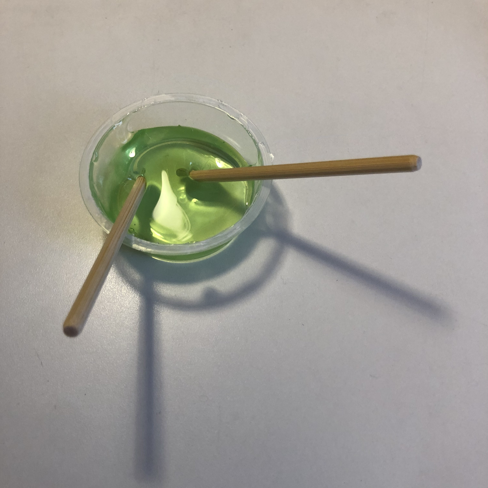

R406
6/1
今日はけっこう無茶をした
人はがんばりたいときにはなるべくがんばっておくのがよいと思う。
6/2
胸が重い
人を轢くより轢かれた方がましだと思う
6/5

ひさびさに地元民と会ってたのしかった
クレーンゲームはまったかもしれない
昨日ウパのぬいぐるみ取って、今日サメのぬいぐるみ取った。
むしのぬいぐるみかわいいの無いしそもそもぬいぐるみ無い。
6/9
自分が所属する共同体ではなるべく多くの人と仲良くしておいた方がいいけれど全員と円満にやっていくことは難しいので自分の味方になってくれる数人を大切にしていきたいと思う。
人間関係が全ての世の中は厳しいz
このことに気づいたのいつぐらいだろう
6/11
いろいろやった方が楽しいけれどやらないでいることが不安の種にならないように生きたい。
6/12
ネギまいい話だ
6/13
結局人から勧められたものはあまり見ず申し訳なくなるのであまり人に自分の好きなもの勧めないように気をつけている。
かなしいな
最近というかここ数年自分はロリコンなのかもしれないと思っている。
ロリのはじまりどこだ
メイドインアビス
終末旅行
化物語
6/17
人間関係むずかしい
うまくいかない人間関係で相手のせいにするよりは、結局自分を変えることで適応するのがいいのかもしれない
その方がまだ希望がある
相手が変わってくれるのを待つよりは、自分を変えていく方が100倍楽だと思う、結局。
高校の恩師が以前それを言っていて、本当にその通りだと今思う。
6/19
ラーメン
ごみ処理施設
公園
神社
駄菓子屋
花屋
デルフィニウム



6/20
気が重い
でもがんばるしかないか
あーーーー
6/22
起きたらなんか節々が凝ってるような
ゆめ
東海大地震
洪水で流されそうになって濁流に呑み込まれた人々をみた
自分はビルの鉄骨に掴まったり高いところに移動したりでなんとか助かって数十人と洞窟のようなところに避難した
何か敵が侵入してきてヤバいみたいな感じになって終わり
真ロリではなく合法ロリ。
すごい表現だな
なんだろう
ただ現実は年上の人の方が話しやすいし好かれやすい気がする
年下はむずかしい。何話せばいいのか
というよりどういう立ち位置に自分がいればいいのか分からなくなる
ランナウェイ、ハンディキャップ、指標仮説
たらたらしてんじゃねーヨ！
6/25
遊びに誘われてなぜか献血に
人と話すときもっと話すことがあったはずなのに話さずにぼやぼやした抑揚のない言葉を紡ぎあっているような気がする、いつも。
高いところひさびさに行って都市を眺めていたら浄化されるような気がして落ち着いてとてもよかった
献血もしていいことをした気分にもなれたし。
神社いいな
祟りとか罰とかは人が生み出すものだと思う
神さまは何もしない
ただ見守るだけ
人と会うとむしろさびしさが増す問題
眠れなくてつらいのかつらくて眠れないのか
6/25
起きないと。
よしもうがんばって生きるしかないぞがんばるぞしゃんなろー。
自分は自分で励ますしかないしそれが一番効果がある。
何がしたいんだか。
汁なしたんめんあんまうまくなかった
6/30
学会バイト楽しかった。
めちゃお金もらえた。
燃え尽き症候群
今日すれ違った芝犬がかわいくてやはり飼うなら犬だなと思った。